정보처리기능사 (2001-01-21 기출문제)
1과목: 전자 계산기 일반
1. 그림에서 X값은 "0101", Y값은 "1101" 이 입력될 때, 그 결과값 F의 값은?
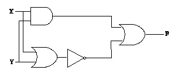
- 0010
- 0110
- 1100
- 0111
(정답률: 66%)

2. 전자계산기의 입력장치만으로 구성된 것은?
- XY Plotter, OMR, Line Printer
- Console Keyboard, Card Reader, XY Plotter
- OMR, OCR, Console Keyboard
- Magnetic Disk, Line Printer, OMR
(정답률: 75%)
3. 자기 디스크(Magnetic Disk) 장치의 주요 구성요소가 아닌 것은?
- IRG(Inter Record Gap)
- 액세스 암(Access Arm)
- 읽고 쓰기 해드(R/W Head)
- 디스크(Disk)
(정답률: 60%)
4. 2진수 101111110을 8진수로 변환하면?
- 576
- 567
- 557
- 558
(정답률: 74%)
5. 매크로 프로세서가 수행하는 기능에 해당하지 않는 것은?
- 매크로 정의 인식
- 매크로 정의 저장
- 매크로 구문 인식
- 매크로 호출 확장
(정답률: 43%)
6. 인터넷 도메인 네임을 IP Address로 바꿔주는 시스템을 무엇이라 하는가?
- HTTP
- TCP/IP
- URL
- DNS
(정답률: 50%)
7. 하드웨어의 선정 조건시 고려사항으로 옳지 않은 것은?
- 입·출력 매체의 다양화에 따른 적응도가 높아야 한다.
- 기억 용량은 소량화되어야 한다.
- 신뢰성이 향상되어야 한다.
- 신속한 처리 능력이 보장되어야 한다.
(정답률: 76%)
8. 불 대수의 관계가 옳은 것은?
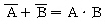
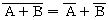
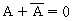
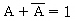
(정답률: 57%)
9. 토글 또는 보수 플립플롭으로서, JK 플립플롭의 J와 K를 묶어서 입력이 구성되며, 입력이 0일 경우에는 상태가 불변이고, 입력이 1일 경우에는 보수가 출력되는 것은?
- D
- RS
- P
- T
(정답률: 66%)
10. 그림의 전기회로를 컴퓨터의 논리회로로 치환하면?
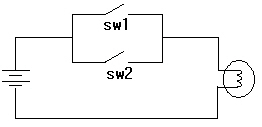
- AND
- OR
- NOT
- NAND
(정답률: 77%)
11. 그레이 코드에 대한 설명으로 옳지 않은 것은?
- 코드의 위치별로 가중치가 부여되는 가중치 코드(weighted code)이다.
- 이진수를 그레이 코드로 변환시, 이진수 최대 자릿수는 그대로 쓰고, 그 비트를 다음 이진수 비트에 합하여 올림수를 제거한 합을 그레이 코드의 다음수로 정해 나간다.
- 아날로그와 디지털간의 변환기 등에 주로 사용된다.
- 입·출력 장치 코드로 유용하게 사용된다.
(정답률: 43%)
12. 부동 소수점(floating point)에 대한 설명으로 옳지 않은 것은?
- 두 수의 덧셈 및 뺄셈시 고정 소수점 표현 방식에서의 연산속도 보다 빠르다.
- 같은 비트로 수를 표시할 경우 고정 소수점 표현 방식 보다 더 큰 수를 나타낼 수 있다.
- 수의 표시에 있어서 정밀도를 높일 수 있어 과학, 공학. 수학적인 응용에 주로 사용된다.
- 소수점의 위치를 컴퓨터 내부에서 자동적으로 조절한다.
(정답률: 42%)
13. 이항(Binary) 연산에 해당하는 것은?
- Complement
- And
- Rotate
- Shift
(정답률: 69%)
14. 명령어 내의 오퍼랜드 부문의 주소가 실제 데이터의 주소를 가지고 있는 포인터의 주소를 나타내는 방식으로, 데이터 처리에 대한 유연성이 좋으나, 주소 참조 횟수가 많다는 단점이 있는 방식은?
- 즉시 주소 지정
- 간접 주소 지정
- 직접 주소 지정
- 계산에 의한 주소 지정
(정답률: 62%)
15. 연산 후 입력 자료가 변하지 않고 보존되는 명령어 형식은?
- 1-주소명령
- 2-주소명령
- 3-주소명령
- 0-주소명령
(정답률: 59%)
16. 인스트럭션이 제공하는 정보가 아닌 것은?
- 작업소요시간
- 명령의 형식
- 연산자
- 자료의 주소
(정답률: 57%)
17. 0-주소 명령은 연산시 어떤 자료 구조를 이용하는가?
- STACK
- TREE
- QUEUE
- DEQUE
(정답률: 79%)
18. 연산에 사용되는 데이터 및 연산의 중간 결과를 레지스터에 저장하는 주된 이유는?
- 비용 절약을 위하여
- 연산 속도의 향상을 위하여
- 기억 장소의 절약을 위하여
- 연산의 정확도를 높이기 위하여
(정답률: 68%)
19. 인터넷에 대한 설명으로 옳지 않은 것은?
- 시간적, 공간적으로 제약없는 통신을 가능하게 한다.
- 초기부터 상업적 활용을 목표로 개발되었다.
- 인터넷의 모체가 되는 네트워크는 미국방성의 ARPANET이다.
- IP 주소를 기반으로 운영되는 네트워크들을 연결한 것이다.
(정답률: 61%)
20. 입·출력 장치와 주기억장치간의 데이터 전송을 담당하는 프로세서로서, 중앙처리장치의 작동과 분리시켜 주변장치의 입·출력을 제어하며, 입·출력 명령 해독, 입·출력장치의 명령 실행 지시 및 지시된 명령의 실행 상황을 설정하는 등의 기능을 갖는 것은?
- DMA
- CHANNEL
- PSW
- POLLONG
(정답률: 51%)
2과목: 패키지 활용
21. 데이터베이스 디자인 단계의 순서가 옳은 것은?
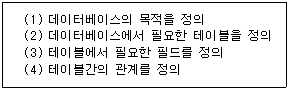
- (1)-(2)-(3)-(4)
- (1)-(3)-(2)-(4)
- (1)-(2)-(4)-(3)
- (1)-(4)-(2)-(3)
(정답률: 66%)
22. 엑셀 문서 파일의 저장시 기본적으로 붙는 확장자는?
- XLS
- WP
- DOC
- HWP
(정답률: 68%)
23. 프레젠테이션 프로그램을 사용하는 용도 중 거리가 먼 것은?
- 회사의 제품 선전용
- 문서작성
- 신제품 설명회
- 강연회 준비
(정답률: 78%)
24. DBMS의 장점이 아닌 것은?
- 데이터의 보안성 보장
- 데이터 공유
- 데이터 중복성 최대화
- 데이터 무결성 유지
(정답률: 75%)
25. 프레젠테이션에서 스크린의 한 화면을 표현하는 것은?
- 애니메이션
- 서식파일
- 슬라이드
- 개체
(정답률: 81%)
26. 파워포인트에서 꾸러미 작성의 기능은?
- 글꼴을 여러 가지 타입으로 자동 변형할 수 있도록 한다.
- 모든 파일과 글꼴을 복사하여 다른 컴퓨터에서 실행할 수 있도록 한다.
- 프레젠테이션을 자동으로 실행하도록 한다.
- 내용이 많을 슬라이드를 여러 개의 슬라이드로 나누는 기능이다.
(정답률: 45%)
27. 엑셀에서 C3 셀부터 C10 셀 범위 중의 최대값을 구하는 방법은?
- =RANK(C3:C10)
- =MAX(C3,C10)
- =MAX(C3:C10)
- =HIGH(C3:C10)
(정답률: 67%)
28. 엑셀에서 D3, E3 셀의 값이 모두 50점 이상이고, F3의 값이 60점 이상이면, F3 셀을 출력하고, 그렇지 않으면 "불합격"을 출력하고자 할 때 사용하는 IF()함수는?
- =IF(AND(D3>=50, E3>=50, F3>=60), F3, "불합격")
- =IF(OR(D3>=50, E3>=50, F3>=60), F3, "불합격")
- =IF((D3>=50, E3>=50, F3>=60), F3, "불합격")
- =IF(AND(D3>=50, E3>=50, F3>=60), "합격", "불합격")
(정답률: 52%)
29. 테이블을 작성할 때 고려해야 할 요소가 아닌 것은?
- 데이터의 형식
- 필드명
- 필드의 크기
- 레코드의 수
(정답률: 46%)
30. 스프레드시트의 기능에 대한 설명으로 옳지 않은 것은?
- 자동계산기능 - 스프레드시트의 대표적인 기능으로 입력된 자료나 데이터를 입력한 후 편집하여 원하는 계산을 자동으로 처리하는 기능
- 분석기능 - 반복되고 규칙적인 작업을 쉬운 언어로 프로그래밍하여 일괄 자동 처리하는 기능
- 데이터베이스 기능 - 대량으로 작성된 자료를 정렬하거나 원하는 자료를 검색하여 관리할 수 있는 기능
- 차트 작성 기능 - 워크시트상의 데이터들을 지정한 영역에 따라 그래프로 그려주며, 이 그래프를 수치나 자료가 변함에 따라 자동으로 수정해 주는 기능
(정답률: 57%)
3과목: PC 운영 체제
31. UNIX 시스템에서 파일 "test1.c"를 최상위 디렉토리인 루트 디렉토리부터 찾고자 할 때, 명령어의 사용이 옳은 것은?
- $find -name test1.c _/ -point
- $find ../ -name test1.c -point
- $find . -name test1.c -point
- $find / -name test1.c -point
(정답률: 45%)
32. 도스에서 "AUTOEXEC.BAT" 파일에 관한 설명으로 옳지 않은 것은?
- 자주 사용되는 일련의 명령어들을 한 그룹으로 묶은 것으로서 일괄처리 파일이라고도 한다.
- 배치 파일의 특수한 형태로서 컴퓨터가 부팅시 자동으로 실행되는 파일을 말한다.
- 일반 배치 파일에서 사용하는 각종 명령어를 모두 사용할 수 있다.
- 부팅 가능한 하드디스크의 어느 디렉토리에 존재하더라도 부팅시 자동으로 실행된다.
(정답률: 44%)
33. 도스에서 A:드라이브(3.5inch)에 있는 특정 디렉토리(ADIR)의 모든 파일 및 서브 디렉토리를 C 드라이브로 복사하는 명령은?
- COPY A:￦*.* C:￦
- COPY A:￦ADIR￦*.* C:￦
- XCOPY A:￦ADIR￦*.* C:￦
- XCOPY /S A:￦ADIR￦*.* C:￦
(정답률: 42%)
34. 유닉스 시스템에서 현재 디렉토리의 목록을 출력하는 명령은?
- ls
- cd
- pwd
- date
(정답률: 54%)
35. UNIX에서 사용되는 "Kill" 명령에 대한 설명으로 옳은 것은?
- 마지막에 입력한 문자를 지운다.
- 마지막에 입력한 단어를 지운다.
- 한줄 전체를 지운다.
- 새 줄의 입력을 위하여 한줄을 지운다.
(정답률: 68%)
36. 도스의 "PATH" 명령에 대한 설명으로 옳지 않은 것은?
- PATH는 실행 파일을 찾는 경로를 설정하거나 보여주는데 사용된다.
- 서로 다른 드라이브에 있는 파일도 PATH에 지정되면 검색이 가능하다.
- 검색시 현재 프롬프트 위치에서 가장 가까운 디렉토리부터 검색한다.
- 찾고자하는 파일이 현재의 디렉토리에 없을 때에만 PATH에서 지정한 경로를 검색한다.
(정답률: 39%)
37. "윈도 98"의 휴지통에 대한 설명으로 옳은 것은?
- "휴지통 비우기"를 실행한 후에도 파일을 다시 복구할 수 있는 기능이 휴지통의 "파일" 메뉴에 있다.
- 삭제된 파일이 휴지통에 보관되지 않고 완전히 삭제되도록 할 수 있다.
- 플로피디스크에 있는 파일이나 네트워크상의 파일도 삭제되면 휴지통에 보관되어진다.
- 도스에서 삭제 작업을 실행하였을 경우에도 휴지통에서 복구 가능하다.
(정답률: 59%)
38. "윈도 98"에서 "디스크 조각 모음"에 대한 설명으로 옳지 않은 것은?
- 디스크 조각 모음은 불량(Bad) 섹터를 치료해 준다.
- 사용중인 디스크의 효율 향상을 위하여 수행한다.
- 디스크 조각 모음 작업 중에도 다른 작업을 수행할 수 있다.
- 하드디스크뿐만 아니라 플로피디스크도 조각 모음을 할 수 있다.
(정답률: 54%)
39. "윈도 98"의 탐색기에서 이웃하는 파일들을 선택할 때 사용하는 키와 비슷하지 않는 파일들을 선택할 때 사용하는 키의 나열이 옳은 것은?
- ctrl, alt
- shift, alt
- alt, ctrl
- shift, ctrl
(정답률: 67%)
40. "윈도 98"에서 실행중인 윈도(창)를 다른 위치로 이동시키려면 어느 곳을 끌기(drag)해야 하는가?
- 제목 표시줄(Title Bar)
- 메뉴 표시줄(Menu Bar)
- 상태 표시줄(Status Line)
- 도구상자 표시줄(Tool Bar)
(정답률: 53%)
41. "윈도 98"의 [보조프로그램]-[그림판]에서 "열기"로 불러올 수 있는 파일의 확장자명에 해당하는 것은?
- XLS
- BMP
- DOC
- HWP
(정답률: 50%)
42. 두 대의 컴퓨터간에 문서를 체계적으로 관리하고 최신 내용으로 유지할 수 있게 해주며, 한 파일의 여러 버전을 동시에 유지할 수 있도록 해주는 윈도 98의 기능은?
- 하이퍼터미널
- 디스플레이
- 내 서류가방
- 메모장
(정답률: 41%)
43. 컴퓨터 시스템의 구성은 아래 그림과 같은 개념으로 설명될 수 있다. ( ) 안의 내용으로 가장 적절한 것은?
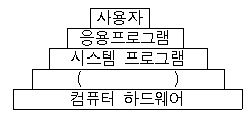
- Operating System
- Application System
- Compiler
- Modem
(정답률: 68%)
44. 운영체제를 제어(control) 프로그램과 처리(processing) 프로그램으로 구분할 때, 제어 프로그램에 해당하는 것은?
- 사용자(User) 프로그램
- 서비스(Service) 프로그램
- 언어 번역(Language Translator) 프로그램
- 데이터 관리(Data Management) 프로그램
(정답률: 58%)
45. 운영체제의 발달 순서를 옳게 나열한 것은?
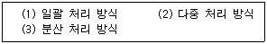
- (2)-(3)-(1)
- (1)-(3)-(2)
- (2)-(1)-(3)
- (1)-(2)-(3)
(정답률: 54%)
46. 다중 프로그래밍상에서 두 개의 프로세스가 실행중에 있게 되면, 각 프로세스는 자신이 필요한 자원을 가지고 실행되다가, 서로 자신이 점유하고 있는 자원을 포기하지 않은 상태에서 다른 프로세스가 자원을 요구하는 경우가 발생된다. 이 경우 두 프로세스는 모두 더 이상 실행을 할 수 없게 된다. 이러한 현상을 무엇이라 하는가?
- 교착상태(Dead Lock)
- 세마포어(Semaphore)
- 가상 시스템(Virtual System)
- 임계 영역(Critical Section)
(정답률: 75%)
47. 도스에서 "CONFIG.SYS" 파일의 특징으로 옳지 않은 것은?
- 도스가 처음 부트될 때 자신에게 필요한 시스템 환경을 설정해 주는 파일이다.
- 일괄처리 배치 파일로서 부팅시에 정해진 처리 및 환경 설정을 수행한다.
- 디스크의 동작 속도를 향상시켜 주는 버퍼/캐시를 설정할 수 있다.
- 키보드, 마우스, 기타 주변장치 활용 방법을 설정할 수 있다.
(정답률: 35%)
48. "윈도 98"에서 클립보드에 관한 설명 중 옳지 않은 것은?
- 잘라내기(Cut), 복사(Copy), 붙이기(Paste)와 같은 명령을 수행할 경우, 붙여넣을 문서가 잠시 저장될 임시 기억장소를 클립보드라 한다.
- 한번에 한 가지의 정보만 저장할 수 있다.
- 제일 마지막에 들어온 정보를 기억하고 있다.
- [Print Screen] 키를 눌러 활성화된 창만 저장할 수 있다.
(정답률: 56%)
49. Which one does below sentence describe?
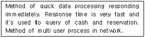
- Real Time Processing System
- Batch-Processing System
- Multi-Programming System
- Off-line Processing System
(정답률: 48%)
50. Which one does below sentence describe?
- throughput
- operating system
- central processing unit
- turn-around time
(정답률: 32%)
4과목: 정보 통신 일반
51. 1,600보(baud)이며, 트리비트(Tribit)를 사용하는 경우 통신속도는 몇 bps 속도가 되는가?
- 9,600
- 4,800
- 1,600
- 2,400
(정답률: 70%)
52. 온-라인 시스템의 주요 구성 요소가 아닌 것은?
- 단말장치
- 회선
- 중앙연산처리장치
- 전송제어장치
(정답률: 48%)
53. 프로토콜의 기본적인 요소가 아닌 것은?
- 구문
- 의미
- 타이밍
- 처리
(정답률: 44%)
54. 기존의 일반가입자 선로인 동선케이블을 이용하여 음성, 고속데이터를 동시에 전달할 수 있어 초고속 인터넷통신 서비스가 가능한 것은?
- BAIDE
- ADSL
- ROUTER
- MODEM
(정답률: 42%)
55. 천리안, 하이텔, 유니텔, 나우누리 등은 다음 중 어떤 정보통신망과 가장 관련이 있는가?
- LAN
- VAN
- ISDN
- MAN
(정답률: 36%)
56. 다음 보기는 데이터 통신의 발전 과정을 순서없이 나열한 것이다. 발전단계를 올바른 순서로 나열한 것은?
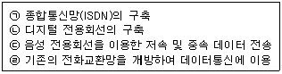
- (ㄱ)-(ㄴ)-(ㄷ)-(ㄹ)
- (ㄹ)-(ㄷ)-(ㄴ)-(ㄱ)
- (ㄷ)-(ㄹ)-(ㄴ)-(ㄱ)
- (ㄷ)-(ㄹ)-(ㄱ)-(ㄴ)
(정답률: 47%)
57. 4상 위상변조는 1회의 변조로 몇 종류의 상태를 나타내는가?
- 2
- 8
- 1
- 4
(정답률: 55%)
58. 통신 제어장치에서 Data의 전송 도중 Error가 발행하여 검출되었을 때 Data의 재전송없이 Error를 수정할 수 있는 code는?
- Hamming code
- Constant ratio code
- Parity code
- Block code
(정답률: 62%)
59. 단말장치(terminal) 자체에서 자체 파일(file)을 가질 수 있는 터미널은?
- 배치 터미널(Batch terminal)
- 멀티 터미널(Muti terminal)
- 인텔리전트 터미널(Intelligent terminal)
- 인터렉티브 터미널(Interactive terminal)
(정답률: 40%)
60. 하나의 Computer를 네트워크를 통하여 다른 Computer의 terminal로 만드는 소프트웨어이며, 인터넷상에서는 BBS나 데이터베이스 검색 등을 할 수 있는 것은?
- Homepage
- Telnet
- HTTP
- DNS
(정답률: 34%)
- X와 Y를 AND 게이트에 연결하여 Z1을 구합니다. Z1 = X AND Y = 0101 AND 1101 = 0101
- X와 Y를 OR 게이트에 연결하여 Z2를 구합니다. Z2 = X OR Y = 0101 OR 1101 = 1101
- Z1과 Z2를 AND 게이트에 연결하여 F를 구합니다. F = Z1 AND Z2 = 0101 AND 1101 = 0101
따라서, F의 값은 "0101"이 됩니다. "0111"은 오답입니다.